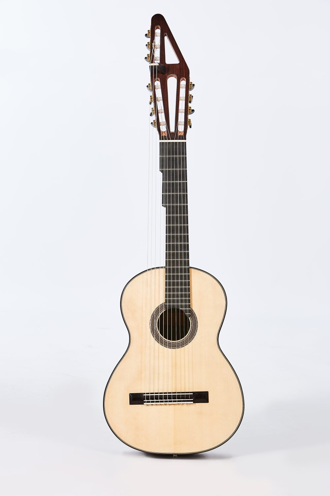

Español
Español
 Français
Français

My guitars
Each guitar is a unique, handcrafted project to which I devote all my time and care. All of them are fully customized and made to order from scratch.


What do they say about me?
Over the years, my clients and friends have written about my guitars and about their relationship with me. I share these with you because, for me, they are a source of pride and a true treasure.
Testing Daniel's eleven-string
It's the one I feel most comfortable with
“That guitar that makes love with me and gives me more and more, with which I feel comfortable and in harmony with sound and vibration… A perfect symbiosis of an imperfect magic of ancient wisdom. It lets me develop without limiting me and lets me enjoy the reminiscences of sonic spaces… Kind guitars, sensitive yet strong, that adapt to the moment and the form. It couldn't be otherwise, knowing its creator and knowing his search, which is also mine.”
A few images are worth a thousand words
His guitars give voice to my fingers
“Daniel Bernaert and I met years ago in a place called 'My Sound.' What better meeting place for a luthier and a guitarist! Since then, five of his guitars give voice to my fingers.”
Colors in every note
“I love Daniel's guitars because in them we can find thousands of timbres and colors that provoke very different and thrilling sensations when combined. At times it seems as if the intensity of the sound increases over the duration of a note, astonishingly defying the laws of physics. Incredible. However, what I like most is the depth of his guitars: the sound rests on a firm and dense base of harmonics that gives it its characteristic precision and stability. In addition, the projection is impressive: deep, clear, and direct.”
Balance, precision and comfort
“Daniel Bernaert's guitars have a distinctive sound that reflects the care the master puts into the entire handcrafted process. It's not a loud guitar, but its sound reaches the back of the hall better than any other, with precise articulation and a balance that remains across the entire range. Finally, its comfort means the musician doesn't feel fatigue at the end of the concert, being able to play the encores without fear of hand exhaustion. Sound, balance, and ease of playing are the characteristics that best define any instrument. Congratulations, Daniel!”
A sound sweet as honey
"Daniel's guitar gives me the warmth I want when playing the instrument: a sweet, clear and velvety sound while having power for a romantic guitar."
His romantic guitar made me fall in love
“After years of searching, in 2005 I was able to play a romantic guitar that won me over instantly with its enveloping and velvety sound. From that moment on, I can't play 19th-century works without Daniel Bernaert's guitar. Thank you, Maestro.”
Its result transcends the merely physical
“I could say that Daniel's guitars have a poetic sound in the trebles and talk about the balance of the voices and a whole series of positive attributes without being wrong… But what really makes his guitars special is a set of factors—or mysteries, as he likes to call them—whose combination produces a result that goes beyond the merely physical or acoustic and reaches the human. I have sometimes dreamed that my guitar built by Daniel was alive; then I woke up and realized it was true. My sincerest admiration for this artist, Daniel Bernaert.“
Poetic sounds
“Music becomes poetry and song through Daniel Bernaert's guitars”